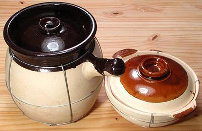

Chinese Sand Pot

Used in both China and Vietnam, these pots are made of a special clay
that has a sandy feel on the outside. The inside is usually glazed. They
are made in a number of sizes and shapes.
Über expert Paula Wolfert recommends these for Mediterranean clay
pot cooking, because they are so much less expensive than European clay pots
- but these are becoming scarce due to Communist central planning favoring
stainless and aluminum.
More on Chinese Kitchen Gear
Cautions
- These pots are intended for oven or open flame. If used on an electric
stove a heat defuser must be used on the burner.
- Use moderate to low heat for all cooking.
- Avoid sudden changes of temperature. Never set a hot pot on a cold
surface. It can be set on a folded towel, or on wood.
- Never put the pot in a preheated oven. place in a cold oven so it
can come up to temperature gradually.
- Do not use soap or detergent to clean, it can get into pores and
taint food.
Seasoning Indian Clay Pots
- Soak in water 8 hrs or overnight.
- Wipe clean with a scouring sponge.
- Set in the Sun until completely dry.
- Fill with water and and 1 cup cooked rice (2 cups for a big pot).
- Wipe the bottom of the pot and place on a cold burner grate. Turn
heat to low until water is warm, then up to moderate to bring rice water
to a boil. Turn again to low and leave it at a bare simmer for a couple
of hours. Let cool completely, then discard rice and water.
- Clean well with a damp sponge - no soap or detergent - they can get into
the pores and harm food flavors.
- Before each use: give it a soak in water for 15 minutes
or so.
Hairline Cracks
- Re-season as above.
- Paula Wolfert says she has had great success filling
a sand pot with milk and bringing it to a simmer for awhile.
ke_sandc 220216 - www.clovegarden.com
©Andrew Grygus - agryg@clovegaden.com
Photos on this page not otherwise credited are ©
cg1 - Linking to and non-commercial
use of this page permitted